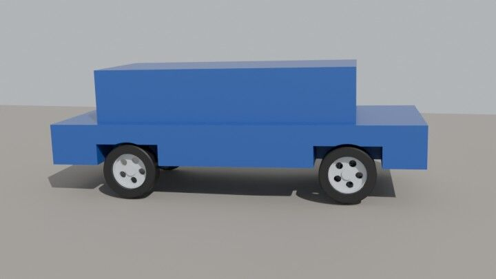
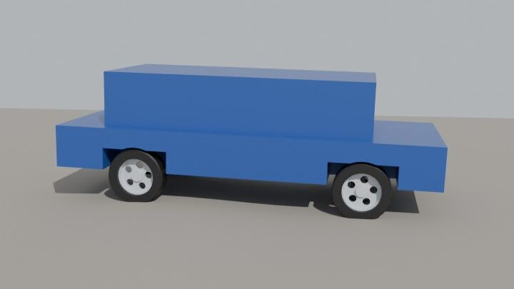
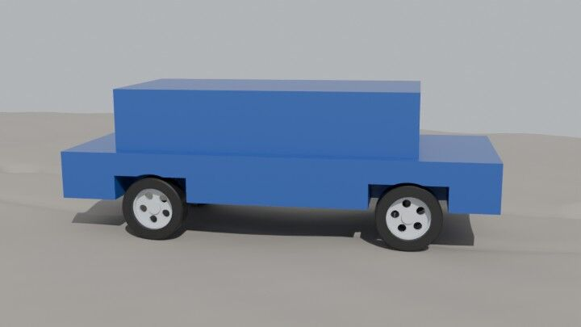
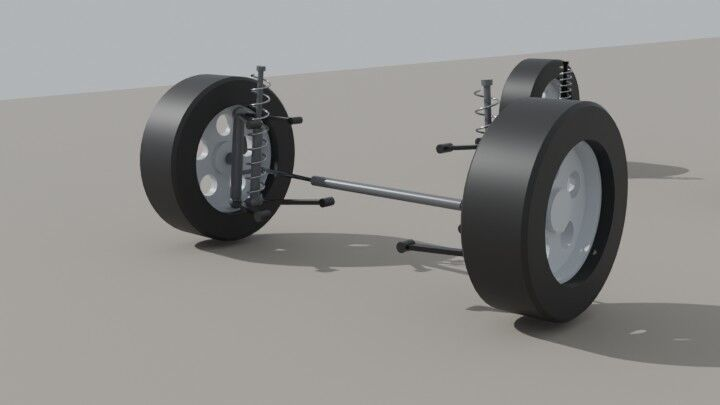
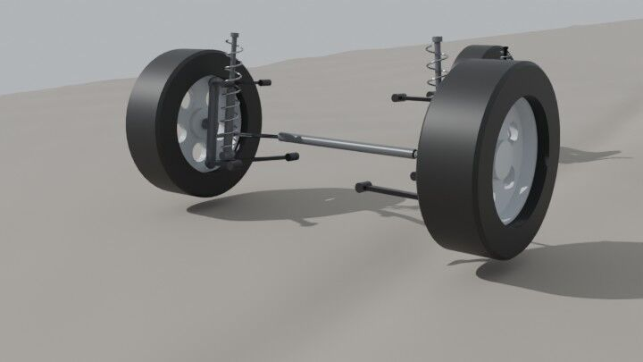
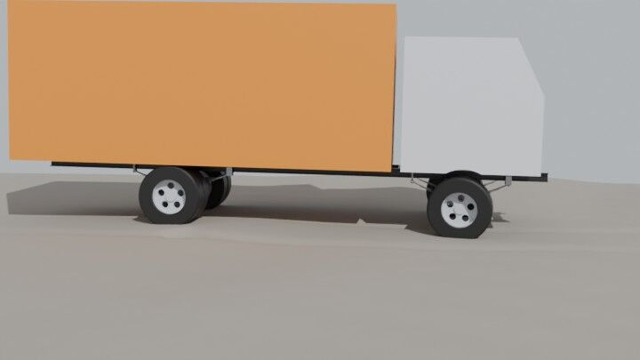

A Vehicles workspace (study 0306)
1 · What it looks like for the user
Wheels: 4 found – ShowPick again
Steered: front · Body: "Body" · Suspension: front double wishbone (found), rear trailing arm (found)
2 pieces · 31 points · tightest bend 6.2 m (ok)
The same pattern as the Set-up window of the mill and the crane: steps top to bottom, the app proposes, the user corrects. What the app finds by itself from the STEP (to be built in A / B, partly tried here):
- Wheels: parts that are round about one axis with a big diameter, named tyre / tire / wheel / band / Reifen / Rad / wiel (EN / NL / DE), paired across into axles; twin tyres as one wheel.
- The upright / knuckle: the part the wheel's axis goes through. Arms: parts with round eyes that join the upright to the body (0014's "pins from shared round faces").
- Kind: two arms → double wishbone; one arm + a long part from the upright up to the body → MacPherson; one arm turning about the vehicle's width → trailing arm; one beam between both wheels → solid axle.
- Steering: the steered axle's uprights turn about the line through their ball joints (kingpin); each wheel by Ackermann.
2 · Suspension kinds (point A)
| Kind | Where | How it is rigged | Tried here |
|---|---|---|---|
| Double wishbone | cars' front, vans, machines | a four-bar in the front view on the app's mechanism solver (0014); input = lower arm | table of 37 rows in 16 ms; camber +0.7° … −2.2° over the travel |
| MacPherson strut | most cars' front | the same with the upright sliding along the strut | 332 ms; camber +2.1° … −0.8° |
| Trailing arm | rear of cars, trailers, many machines | one turning joint | 6 ms; wheel moves 20 mm fore-aft |
| Solid axle (leaf or coil) | trucks, vans' rear, off-road | two stacked joints on the axle: up/down + tilt; the wheels and the steering ride on it | truck front and rear |
| Multi-link | modern cars' rear | not one plane: the wheel carrier moves along its travel (straight or an arc); small camber / toe changes left out | – (designed) |
| Bogies, tracks | cranes, crawlers, machines | bogie = a turning joint between two wheels; tracks = tracks.py's loop, turning by speed difference | – (task G) |
The study car's front: double wishbone, steered; rear: trailing arm. The truck: solid axles on leaf springs, twin tyres at the rear. Full lock: car inner wheel 35.5°, outer 26.9° (Ackermann), turning circle of the rear axle's middle 4.8 m; truck 40.1° / 31.8°, 6.7 m.
3 · Following a path over a bump and a rough track (point B)






The car's drive, measured: path + speed 5 ms, wheels on the ground 226 ms, the ride in 1 ms steps 367 ms for 505 frames (20 s) – about 1.2 ms per frame; the mechanisms ~1 ms per frame; writing keys for 28 parts ~4 ms per frame. Pitch -3.24° … 3.19°, roll -3.86° … 1.89°, wheel travel -67 … 75 mm, 2 frames with a wheel off the ground (potholes). The truck: 666 frames in 0.85 s. A 20 m circle at the comfortable speed: the car rolls 1.3° at 0.31 g (about 4° per g – a normal car); the truck 4.5° at 0.18 g (too soft – its preset needs anti-roll). Web machine, 4 cores, no graphics card.
How: a speed along the path (slower in bends at a comfortable sideways acceleration, ramps up and down), the body heading along the path, each wheel's centre on the ground as a rigid wheel (it climbs a step with its round front, not with its lowest point), the body on springs and dampers per wheel, tyres as springs that can leave the ground, bump stops, the body leaning in braking and corners. Everything ends as keys: it plays with scripts off, in the render queue and on another PC.
4 · Paths: drawn, or driven yourself (point C)
A drawn path needs a curve that steers smoothly
The same 8 clicks (a road with two bends). The camera path's curve (Catmull–Rom, task 0087) is smooth in direction but its bend changes in jumps at every point – and a vehicle's steering angle is the bend: the front wheels jump 12° within 10 cm, which would need 1,108°/s of steering at 30 km/h. A spline through the same points (smooth bend, plain NumPy) needs 25°/s at most. Points closer than ~1 m to each other still make a sharp bend between them: the path tool keeps them apart and shows a red stretch tighter than full lock.
Driving yourself
Blender 5.2.3 has no event for a game controller (checked: none of its 196 event types – only keyboard, mouse, a 3D mouse and VR controllers inside a VR session). Windows has two calls that need nothing installed, both reachable from the app's Python with ctypes as it already does for window places: XInput (Xbox-type pads) and the joystick call of winmm (any game controller, steering wheels with pedals). Written and structure-checked here (gamepad.py); it can only be tried on your PC.
The live drive: a timer ~60 times a second moves the vehicle by a simple drive model (the rear axle never slides sideways; steering by keys ramps to full lock in 1.3 s and back to the middle when let go, less lock at speed; the brake held at a standstill drives backwards). Tried in the real Blender under a virtual screen: the keys arrive once per press / release; the timer ran only 6–7 times a second because this machine draws the window without a graphics card (~135 ms per redraw, even with a small scene) – the drive model steps in 20 ms pieces, so after 52 m it ended within 1.5 m of an ideal 60-a-second drive. How smooth it feels on your RTX 3090 is a PC-check item.
The keyboard drive with the car (33 s): off, two bends, a stop, back into a bay, out again. Grey: what was driven; coloured: the editable pieces (red = reverse); dots: their points.
| Drive | Length | Ticks | Pieces | Points | Furthest off | Speed keys | Fit |
|---|---|---|---|---|---|---|---|
| car, keyboard | 33.0 s | 1923 | 142.6 m + reverse 11.9 m + 29.9 m | 22 + 8 + 5 | 25 mm | 14 + 8 + 11 | 62 ms |
| car, controller | 30.0 s | 1732 | 329.8 m | 26 | 35 mm | 13 | 68 ms |
| truck, keyboard | 33.0 s | 1910 | 53.2 m + reverse 9.4 m + 10.8 m | 11 + 6 + 2 | 65 mm | 9 + 6 + 7 | 20 ms |
Ticks at an irregular ~60 a second with hitches (a redraw of a big model). Where a full-lock bend was steered while creeping, the fitted path is up to 15 % tighter for a few decimetres (1 stretch in the car's drive): the drive itself is kept as driven (exact), the points are for editing, and Build holds the steering at full lock there.
5 · Ground (point D)
Every ground becomes one height grid at Build (5 cm), read for every wheel at once: 0.15 µs per point against 20 µs per ray onto the mesh. Making the grid from any meshes by rays over the strip the vehicle drives: 6.4 s for 100 m × 8 m at 5 cm (one core; 4× less at 10 cm). Kinds: the floor, a speed bump (long round hump 75 mm × 3.7 m, short hump 70 mm × 0.9 m, raised crossing), an off-road track (waves of a few metres, stones, two ruts 6 cm deep, potholes 12 cm), an imported terrain. The terrain itself (height maps, painted layers, roads) is study 0311's: the hand-over is only "a mesh under the path" – any mesh works.
6 · The drive / path tool shared with the vessels (0312)
- One recorder: live input (keys / controller) → a motion model per kind (here: a car's bicycle; vessels: their own – turning circle, drift, thrusters sideways) → samples → pieces (forward / backward) → editable spline + speed keys over the share of the way.
- Vessels also need heading keys apart from the path (a ship crabbing sideways on DP faces another way than it moves); cars use the path's direction.
- The same spline for drawn paths of both; ground-following only for vehicles; for vessels the sea's motion is added at Build (0085).
7 · Build tasks – tick what to build
A new Vehicles lane (blender/vehicles*.py, core/vehicle*.py, core/drive_path.py). Work: S ≈ half a day of a worker chat, M ≈ a day, L ≈ two or more.
Vehicle rig and a drawn path on flat ground work L · Opus · High · Vehicles lane (new) · first
A new Vehicles workspace and a step window (0282's function windows): 1 Vehicle – pick a kind (car, van, 2-axle truck, 3-axle truck) and click the wheels (the app proposes them: round parts with tyre / wheel / band / Rad / Reifen / wiel names, paired into axles), the steered axle, the body; 2 Path – click on the ground, a smooth path that steers smoothly (the spline of section 3, not the camera path's curve), drag points, a red stretch where it is tighter than full lock; 3 Speed – one speed, slower in bends by itself, a stop at the end. Build keys the vehicle along it: steering by Ackermann on each front wheel (a table coupling, scripts off), every wheel turning with its own rolled distance, the steering wheel in the cab with its ratio. Test models: the invented car and truck of this study; tour stop, PC-check line, lesson step, guide.
Gain: the owner's first wish – a vehicle driving a path – with no ground or suspension yet.
Ground with height and the ride work L · Opus · High · Vehicles lane · after A
The ground under the path becomes a height grid at Build (rays on 5 cm over the strip the vehicle drives: 6.4 s for 100 m × 8 m measured; any mesh – the app's floor, an imported terrain, a CAD kerb), each wheel rests on it as a rigid wheel (rolling envelope), the body rides on springs and dampers (pitch, roll, heave; wheels can leave the ground; bump stops; braking and corners lean the body). Ready-made speed bump props (long round hump, short hump, raised crossing) and an off-road ground (waves, ruts, potholes) until 0311's terrain maker exists. Suspension kinds: double wishbone and MacPherson and trailing arm as 0014 mechanisms (a table follower on a 'wheel travel' joint), solid axles as two stacked joints (heave + roll).
Measured: the car's 20 s drive solves in 0.6 s, the mechanisms ~1 ms a frame, the keys ~4 ms a frame; the pictures above.
Drive it yourself, recorded, made into a path work M–L · Opus · High · Vehicles lane · after A · shared with 0312
Drive… in the Path step: the view follows the vehicle (chase camera), W A S D / arrows; the brake held at a standstill goes backwards; Esc or Enter ends. The drive is kept as driven (steering and speed over distance: exact) and turned into pieces – forward / reverse – each an editable path with few points and a few speed keys (table above). The core (drive model, recorder, fitting) is one module that 0312's vessels use with their own motion model (section 6).
Measured: a 33 s keyboard drive → 3 pieces, 35 points, within 2.5 cm, fitted in 62 ms.
Game controller work S–M · Opus · Medium · Vehicles lane · with or after C · Windows-only: independent review
Xbox-type pads through XInput, every other pad, a steering wheel with pedals through Windows' joystick call – both with ctypes, nothing installed (gamepad.py in this study). Settings: dead zone, steering curve, which pedal is which. A PC-check line 'Game controller' (move the stick, see the number) – only your PC can test it.
Gain: smooth steering and throttle; the keyboard stays.
Vehicle presets, saved and shared work M · Opus · Medium · Vehicles lane · after B
Per kind: mass, centre of mass, springs, dampers, tyres, anti-roll, lock, comfortable speeds (the truck preset needs a stiffer roll than this study's: it leaned 4.5° at 0.18 g). Adjust in the step window, Save as my / department / company preset (0272's locations, .frsetup). Also the Lifting lane's mobile cranes (AT classes) as presets, so a crane drives onto site before it sets up.
Gain: a sales person picks 'Truck' and gets a believable ride without numbers.
Springs, dampers and tie rods that stretch; leaf springs that bend work M · Opus · Medium · after 0300's picks
In this study's pictures the springs ride along rigidly (a shortcut). With 0300's coil spring and rubber work they stretch between their two eyes, a leaf spring bends with its axle's travel.
Gain: close-ups of the suspension look right.
Trailers, all-wheel steering, tracked machines work L · Opus · High · Vehicles lane · after B
A trailer on a hitch follows its truck (the hitch angle from the path – a trailer cuts the corner, as a real one); several steered axles (mobile cranes: rear axles steer the other way, crab steering); tracked machines turn by their tracks' speed difference, the road wheels on bogies on the ground (tracks.py's loop).
Gain: cable-drum trailers, cranes and crawlers on site.
Wheels that look right at speed work S · Sonnet · Medium · Vehicles lane · with A
Motion blur on in vehicle videos by default (Cycles), and a note in the Speed step where the rims would seem to turn backwards at the video's frame rate (a 5-spoke car rim at 25 fps: from 20 km/h, standing still at 41 km/h).
Gain: no 'wagon wheel' effect in the owner's videos.
Pictures: tasks/0306_page/img; numbers: tasks/0306_proto/*.json; the prototype (vehicle maker, ground, ride, drive, controller, kinematics, Blender bake) in tasks/0306_proto on the branch task/0306-study-vehicles. The test vehicles are invented (no real make).